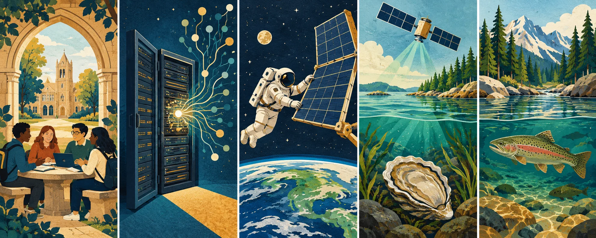

Independent daily digestFive stories worth your time
The Daily Curiosity
What keeps a system healthy? Today’s answers range from a place to meet on campus to control over AI, electricity in orbit, a clearer view of coastal waters, and simpler protections for Adirondack trout. Five stories about the care behind things that matter.
AI-generated editorial illustration · The Daily Curiosity. Imagined scenes, not an actual campus, mission photograph, map or species identification.
STORY 01 · Higher education · SUNY
A place to belong can start with a table and a phone-free room

AI-generated conceptual illustration · The Daily Curiosity. Imagined scene; not documentary imagery.
SUNY announced grants of up to $15,000 per campus on October 29 for projects that help students connect, including device-free lounges, peer mentoring and community meals. The program treats social connection as something campuses can deliberately support through spaces and recurring activities, rather than leaving every student to find a community alone. The announcement establishes funding for initiatives; it does not yet demonstrate how much those initiatives will reduce loneliness.
Source published 2026-10-29 · Briefing date 2026-10-29
STORY 02 · Artificial intelligence · Enterprise IT
Mistral puts a new cybersecurity model in organizations’ own hands
AI-generated conceptual illustration · The Daily Curiosity. Imagined scene; not documentary imagery.
Mistral released downloadable weights for an improved Large 4 model on October 29, following its earlier public preview, and says the update strengthens coding and defensive cybersecurity work. The practical distinction is control: organizations can deploy and customize the model on their own infrastructure instead of depending on the vendor to serve every request. The company also acknowledges potential misuse and says it is updating guardrails, so open availability should not be confused with independently verified safety or automatic security gains.
Source published 2026-10-29 · Briefing date 2026-10-29
A spacewalk puts the station’s power supply in the spotlight
AI-generated conceptual illustration · The Daily Curiosity. Imagined scene; not documentary imagery.
NASA reports that Anil Menon and Canadian astronaut Joshua Kutryk began a spacewalk at 7:57 a.m. Eastern on October 29 to install and deploy a roll-out solar array on the International Space Station’s 2A power channel. The job is a reminder that an orbital laboratory needs hands-on infrastructure work as well as scientific experiments: the equipment supplying electricity is itself part of the mission. The cited morning update confirms the spacewalk began, not that installation and deployment were completed.
Source published 2026-10-29 · Briefing date 2026-10-29
Satellite maps help oyster growers trace a damaging bloom
AI-generated conceptual illustration · The Daily Curiosity. Imagined scene; not documentary imagery.
NASA reports that researchers are helping Virginia assess oyster-farm impacts after a September algae bloom stretched along roughly 15 miles of the Chesapeake Bay’s Eastern Shore. The team combined Sentinel-2 satellite imagery with a bay forecast model to examine algae concentrations, unusually warm water and winds that may have moved bloom waters toward growing areas. That connects observations from orbit with decisions about coastal livelihoods, while the ongoing assessment leaves the extent and causes of individual farms’ losses unresolved.
Source published 2026-10-29 · Briefing date 2026-10-29
Protecting brook trout could mean flipping the baitfish rule
AI-generated conceptual illustration · The Daily Curiosity. Imagined scene; not documentary imagery; fish is symbolic, not a species identification.
New York’s Department of Environmental Conservation proposed prohibiting live baitfish use across the Adirondack Park except in 146 waters, replacing a system that lists waters where baitfish are prohibited. The October 28 proposal targets introductions that allow baitfish to compete with pond-dwelling brook trout, and would also remove special harvest rules on 24 managed trout ponds. The shift illustrates how making an ecological protection easier to understand can be part of making it work; these are proposed changes, with public comments accepted through December 28, rather than rules already in effect.
Source published 2026-10-28 · Briefing date 2026-10-29